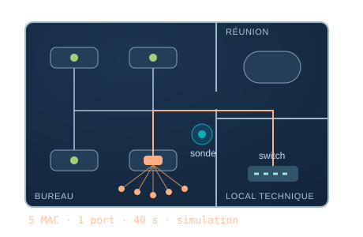

Priorité 1
Un appareil pas déclaré
Il se branche sans être au référentiel. NetAlertX le voit, l’administrateur le qualifie.
La démarche
AURA surveille le câble et les ondes en même temps, puis rapproche les deux. Le but : repérer vite ce qui cloche, sans rien installer sur les postes.
Quatre situations typiques. Les scènes sont des illustrations, pas un vrai réseau.
Il se branche sans être au référentiel. NetAlertX le voit, l’administrateur le qualifie.

Une borne non déclarée émet dans les locaux. Retrouver son port de switch viendra plus tard.

Un poste s’en va pile quand une borne apparaît. Possible partage, à vérifier.

Plusieurs adresses derrière un même port. Nous le testons pour l’instant sur des données simulées.
Le plus parlant, c’est de voir AURA tourner sur un tableau de bord simulé.